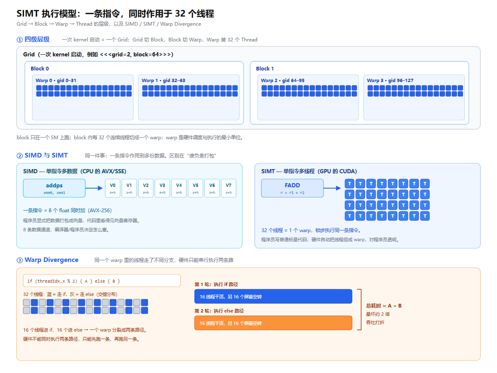

以 NVIDIA GPU 为例，一张图 + 七个问题讲清楚
上一篇拆了 GPU 的硬件——SM、CUDA Core、Tensor Core。硬件摆在那儿，怎么让它跑起来、怎么跑得快、什么时候会突然变慢，是另一回事。
这一篇讲执行模型：一条指令怎么同时作用在成千上万个线程上，为什么 GPU 要靠"线程多"取胜，又为什么一个 if 就能把速度砍半。
下面这张图分三段：上段是 Grid → Block → Warp → Thread 的层级，中段对比 SIMD 和 SIMT，下段是一个 warp 遇到分支时发生的事。后面的问题都围着它讲。

SIMD 是 Single Instruction, Multiple Data，单指令多数据。一句话：一条指令，同时作用在多份数据上。
CPU 里早就有这东西——SSE/AVX 指令集。一条 addps 指令，一次把 8 个 float 加起来。硬件上是一组宽寄存器（128/256 位）加一条指令驱动多个 ALU。
关键点：SIMD 里"哪些数据一起算"是程序员或编译器显式决定的——你得把数据打包塞进向量寄存器，代码里看得见向量。
打个比方：一个班 32 个人，老师喊"每个人把自己桌上的数加 1"，一声令下大家一起动。前提是每个人做的是同一个动作。
SIMT 是 Single Instruction, Multiple Threads，单指令多线程，NVIDIA 提出来的。
它和 SIMD 很像，都是"一条指令作用多份数据"，区别在谁负责打包：
SIMD：程序员手动把数据打包成向量，代码里写的是向量操作。
SIMT：程序员写的是最普通的标量代码——每个线程有自己的变量、自己的 if/for，看起来跟写单线程程序一样。是硬件在背后把 32 个线程组成一个 warp，让它们锁步执行同一条指令。
所以 SIMT 对程序员是"透明"的：你不用手动打包，甚至不用知道 warp 的存在（但知道了能写得更快）。一句话区分：SIMD 是数据并行，程序员管向量；SIMT 是线程并行，硬件管打包。
从大到小四级，记住这张层级：
Grid：一次 kernel 启动的全部线程。你写 <<<grid, block>>> 时，grid 就是它。
Block（线程块）：Grid 切成的块。一个 block 只在一个 SM 上跑，block 内线程可以用 Shared Memory 通信、用 __syncthreads() 同步。
Warp（线程束）：32 个连续线程。这是硬件调度和执行的最小单位。一个 block 的线程会按 32 个一组切成若干个 warp。
Thread（线程）：最小执行单元。每个线程有自己的寄存器，能读自己的 threadIdx。
拿工程里的参数举例：2 个 block、每 block 64 线程。
| 层级 | 数量 | 怎么来的 |
|---|---|---|
| Grid | 1 | 一次 kernel 启动 |
| Block | 2 | grid = 2 |
| Warp | 4 | 128 线程 ÷ 32 |
| Thread | 128 | 2 × 64 |
全局线程号公式一定要记住，后面全靠它：
gid = blockIdx.x * blockDim.x + threadIdx.x warp = gid / 32 lane = gid % 32
warp 里的 32 个线程锁步（lockstep）执行同一条指令：
取指一次，32 个线程各自用自己的寄存器、自己的数据执行。一个 warp 一条指令，理想情况下 32 个线程同时完成。
关键：warp 既是调度单位，也是执行单位。SM 里有很多 warp，Warp Scheduler 每个周期挑一个"就绪"的 warp 发射指令。
举个例子：a[i] = b[i] + c[i]。32 个 lane 各算一个 i，一条加法指令就搞定 32 个元素。这就是 GPU 快的来源——不是单个线程快，而是一条指令同时喂饱 32 个计算单元。
分两层看：
硬件层：GigaThread 引擎把 grid 里的 block 分给各个 SM；SM 再把 block 里的 warp 分给 4 个分区，每个分区一个 Warp Scheduler。
时间层：Warp Scheduler 每个周期从"就绪"的 warp 里挑一个发射。某个 warp 卡在访存（几百个周期），立刻切到另一个 warp——这叫延迟隐藏。
三个关键点：
1. 一个 SM 同时能挂多少 warp 是有限的，受寄存器、Shared Memory 约束，这就是 occupancy。
2. warp 之间切换几乎零成本：每个 warp 的寄存器本来就在 SM 里，不用像 CPU 线程那样存上下文再恢复。
3. 所以 GPU 靠"很多 warp 轮着上"来掩盖延迟，而不是靠单线程跑得快。
举个数字：A100（sm_80）一个 SM 最多 64 个 warp（2048 线程），4 个调度器，每个管 16 个 warp 槽位。
Warp Divergence（warp 分歧）：一个 warp 里的 32 个线程，因为 if/else 或循环条件不同，走了不同的分支。
问题在于：SIMT 要求 32 个线程锁步走同一条指令。如果一个 warp 里有的进 if、有的进 else，硬件没法同时执行两条路径，只能：
先执行 if 分支——走 else 的线程被"屏蔽"（masked），空转；再执行 else 分支——走 if 的线程空转；最后汇合。
结果：两条路径串行化，最坏情况下时间翻倍。图的下段画的就是这个。
一个典型例子：
if (threadIdx.x % 2) { A } else { B }
一个 warp 内奇偶各一半，这个 if 就会让 32 个线程分成两半，两条路径各跑一次，等于两倍时间。
怎么避免：
让分支的粒度对齐 32——按 blockIdx 分，而不是按 threadIdx 分，这样一个 warp 内的线程就走同一条路；短小的 if 用"谓词执行"（predication），不产生真正分支；必要时做数据重排，把同类数据聚到一起。
一句话：SIMT 的快，建立在"32 个线程走同一条路"上；一旦分叉，快就打了折。
思路很简单：启动 <<<2, 64>>>，让每个线程算出自己的 gid / warp / lane 并打印出来，肉眼就能看出层级。核心就三行，就是前面那个公式：
int gid = blockIdx.x * blockDim.x + threadIdx.x; int warp = gid / 32; int lane = gid % 32;
完整代码在 06_simt/warp_map.cu。为了输出有序，kernel 只负责算，主机端按 gid 顺序打印。
有 GPU 的话：
nvcc -arch=sm_80 06_simt/warp_map.cu -o warp_map ./warp_map
输出节选（每 32 行一组，lane 从 0 回到 31，warp 号加 1，这就是 warp 的边界）：
launch <<<grid=2, block=64>>> 128 threads, 4 warps gid block thread warp lane ---------------------------------- 0 0 0 0 0 ... 31 0 31 0 31 ---------------------------------- 32 0 32 1 0 ... 63 0 63 1 31 ---------------------------------- 64 1 0 2 0 ... 95 1 31 2 31 ---------------------------------- 96 1 32 3 0 ... 127 1 63 3 31
没有 GPU 也能看：工程里有个纯 Python 版本 06_simt/warp_map.py，用同样的公式把映射算出来，不需要显卡：
python3 06_simt/warp_map.py
两边输出完全一致。你可以拿它验证自己对 gid / warp / lane 的理解，也可以改 grid 和 block 的数值，看层级怎么跟着变。
本文的图和说法都来自同一个开源工程，大部分实验不需要显卡：
https://github.com/qhc0609/gpu-arch-lab
仓库结构（本篇新增 06_simt/）：
00_chip_parts/ 芯片由哪些硬件组成（纯讲解脚本） 01_env/ openEuler 无卡安装 CUDA Toolkit（只装编译器） 02_ptx_sass/ CUDA Core(FFMA) 与 Tensor Core(HMMA) 指令对比 03_occupancy/ 纯 Python 计算 SM 占用率 04_cloud_probe/ 云上真机取证 05_sim/ GPGPU-Sim 可选路线 06_simt/ warp_map.cu（有卡跑）+ warp_map.py（无卡跑） simt-diagram.svg / .png 本篇的图 article.html / article-02-simt.html 两篇文章
在你自己的机器上跑起来：
git clone https://github.com/qhc0609/gpu-arch-lab.git cd gpu-arch-lab python3 06_simt/warp_map.py # 不需要显卡，直接看映射
如果你改了内容想提交回仓库（需要你自己的账号权限）：
git add -A git commit -m "docs: 新增 SIMT 执行模型文章" git push # 推到 qhc0609/gpu-arch-lab
代码与数据：github.com/qhc0609/gpu-arch-lab ｜ 环境：openEuler 24.03 + CUDA 12.4（无 GPU）